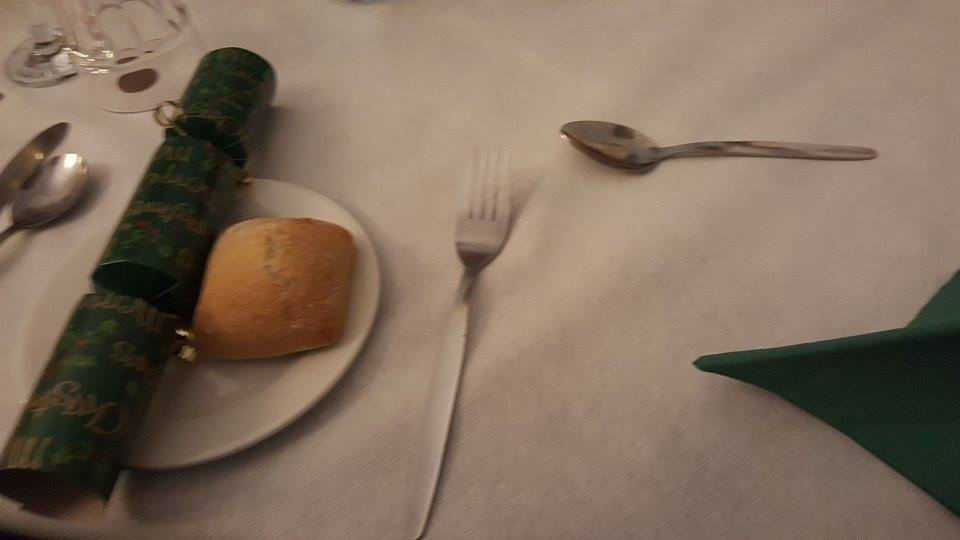
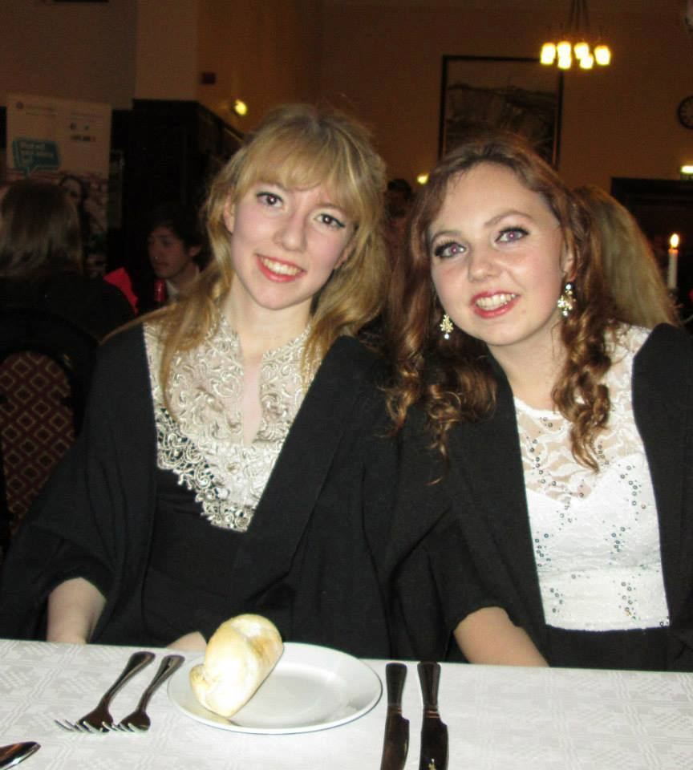
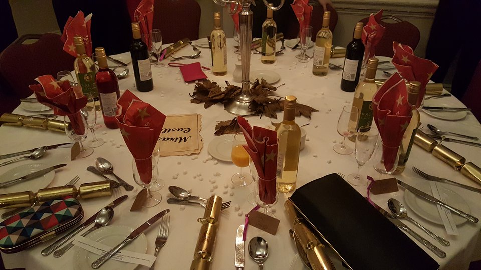

Formal Dress
It is a tradition for anyone attending formal meals to dress in their finest black tie, with men sporting dashing suits it's bound to have that fancy feel. But we all know that it's the women who steal the show with all of the beautiful dresses on display and those killer heels! It really is a chance to show off and dress to impress as you catch up with all your college companions for the last time before the term ends.
But don't forget your gown! OR maybe not... In some of the more traditional colleges it is required to wear a gown for all formals giving it that extra Hogwarts feel. But not all of them so make sure you're clued up before you turn up looking like a wizard in a suit.


